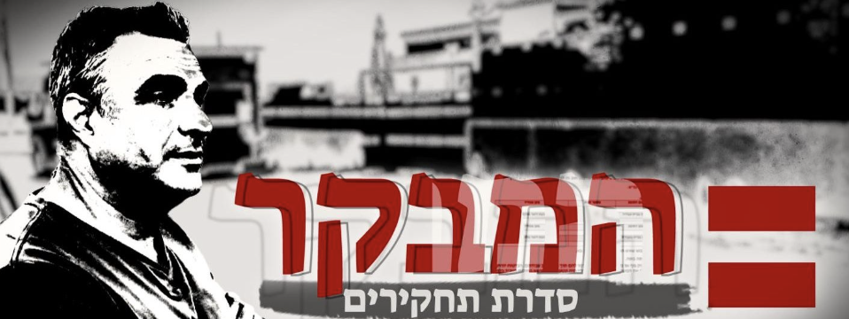

01 · תוכנית הפעולה
ציר הזמן
לחצו על נקודה כדי לפתוח את כל הנתונים שלה. גררו, גללו או השתמשו בחצים.
02 · הראיות
המסמכים
כל מסמך מתויג לנושא ולנקודה בציר הזמן. לחיצה על התגית קופצת לנקודה.
אין מסמכים שמתאימים לחיפוש.

לחצו על נקודה כדי לפתוח את כל הנתונים שלה. גררו, גללו או השתמשו בחצים.
כל מסמך מתויג לנושא ולנקודה בציר הזמן. לחיצה על התגית קופצת לנקודה.
אין מסמכים שמתאימים לחיפוש.